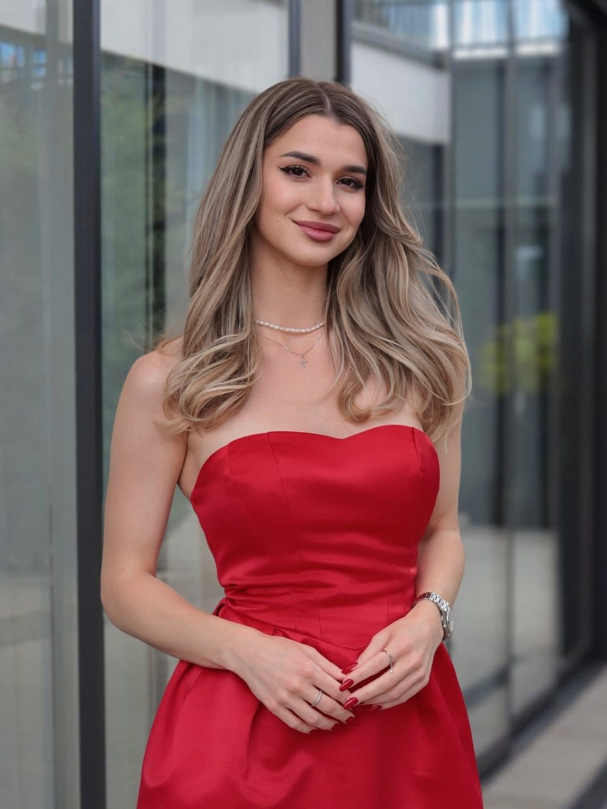

Lucy
Lennon
"Fashion becomes meaningful when design expresses confidence, individuality and modern elegance."
Creative leadership with a contemporary eye
Lucy Lennon graduated from Central Saint Martins in London, where she received a rigorous education in fashion art and garment design. Her training shaped a distinct design perspective and a refined artistic sensibility.
As creative director of MAISON REID, Lucy is responsible for the brand’s design direction, seasonal concepts, visual aesthetics and creative team management. She leads the development of design ideas while overseeing color stories, fabric selection, silhouette development and detail refinement.
With a strong ability to merge classic European couture techniques with modern fashion thinking, she creates work that balances timeless elegance with innovation. She remains committed to original design and artistic expression while exploring the diverse beauty and individuality of contemporary women.